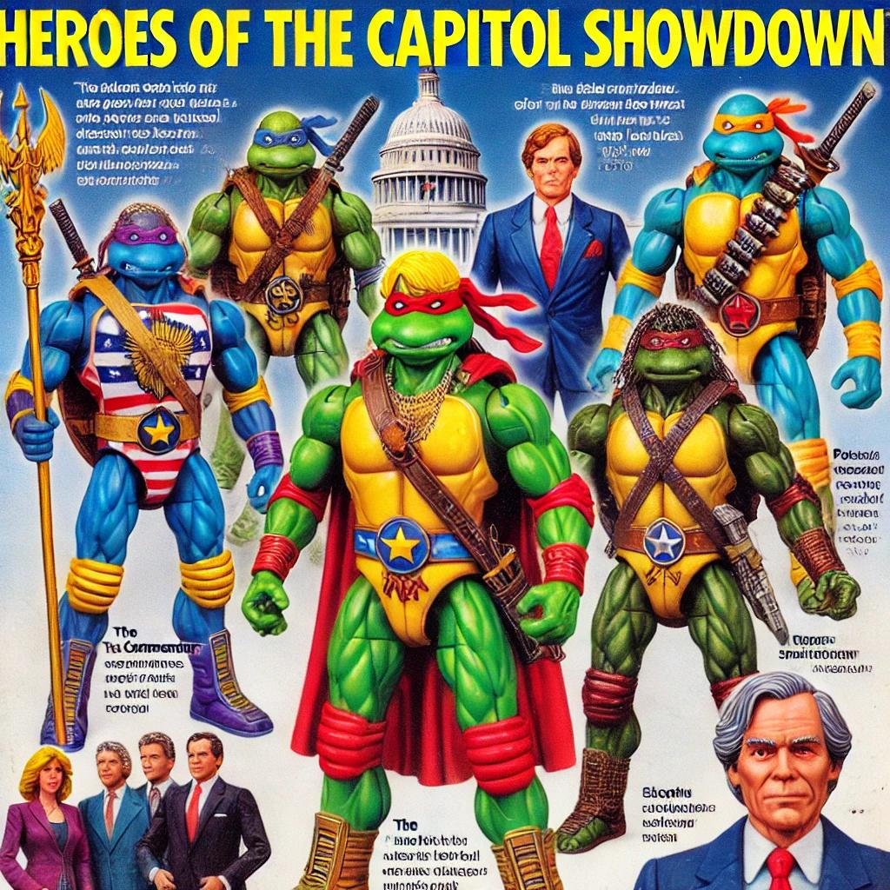

Project Description
This project investigates the creative and ethical boundaries of AI image generation through a zine composed of DALL-E outputs, ChatGPT responses, and OpenAI content policy reflections. Inspired by discussions of nostalgia, re-contextualization, and machine-mediated interpretation, the zine juxtaposes generated images with critical commentary on how AI navigates questions of copyright, political sensitivity, and individual likenesses.
The first page of the zine centers on copyright and creative limitations, highlighted by an attempt to generate a "Wookiee-inspired creature drinking Coke in the style of vintage Santa Coca-Cola ads." Although DALL-E could not depict Chewbacca explicitly, the resulting creature was nearly indistinguishable. The page also explores the AI’s internal guardrails through visual experiments, such as a robot "spokesperson" repeating the platform's copyright guidelines—a meta-commentary on the boundaries of machine creativity.
The second page delves into political content restrictions, using prompts like a Lego-inspired Civil War play set. While explicit depictions of events like the burning of Atlanta were prohibited, the AI was able to generate "soldiers putting out fires" in a general Civil War context, demonstrating how neutrality in content policy shapes what can and cannot be represented. One standout image, "Heroes of the Capitol Showdown," exemplifies how even AI-mediated “neutral” outputs carry unintended resonances.
The final page experiments with individual likenesses, using a professional headshot of OpenAI CEO Sam Altman to test the system’s ability to interpret and recreate personal imagery. By feeding a detailed ChatGPT-generated description of Altman’s headshot into DALL-E, an abstract, non-representational version emerged. Further iterations, informed by ChatGPT’s detailed prompts describing artistic styles (e.g., Rob Liefeld’s comic book aesthetic), yielded stylized depictions that were both distinct and evocative. This iterative process also highlighted DALL-E’s reliance on its training data’s defaults, such as a preference for soft, airbrushed imagery.
Guided by Zylinska’s and Mitchell’s reflections on how machines “read” and interpret images, the zine reveals the often surprising intersections of human intention, machine neutrality, and platform-imposed restrictions. The project surfaces critical questions about AI’s operational role in mediating creativity, particularly the limits of what it allows users to see, create, and imagine.
Download the Zine
You can view or download the full zine as a PDF:
Download the ZineSample Generated Images
Tools & Details
Date: September 2024
Tools:
DALL-E (image generation)
ChatGPT (prompt generation and content explanation)
Microsoft Word (for zine creation)